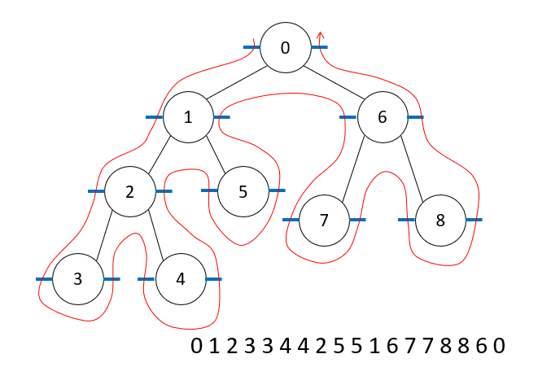
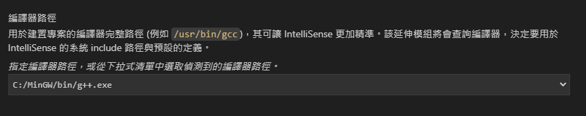
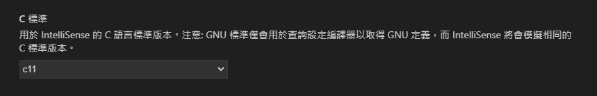
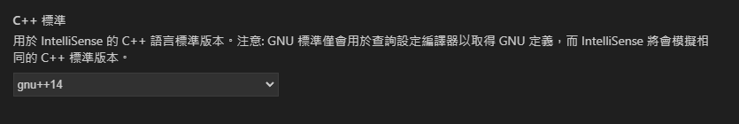
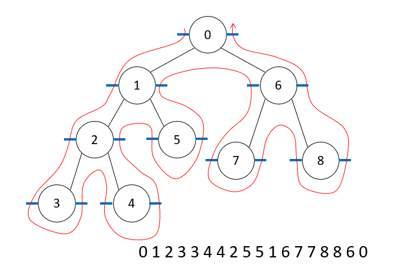
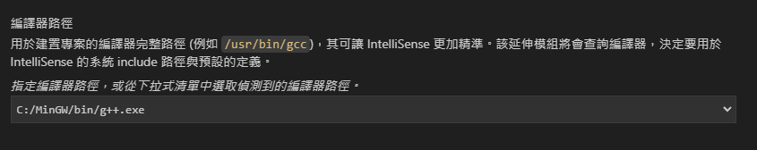
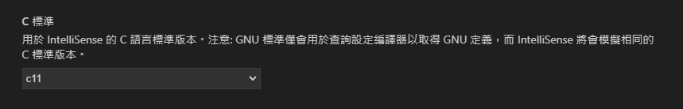
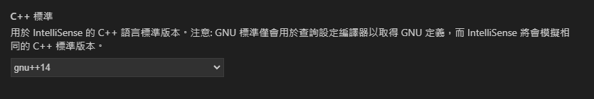
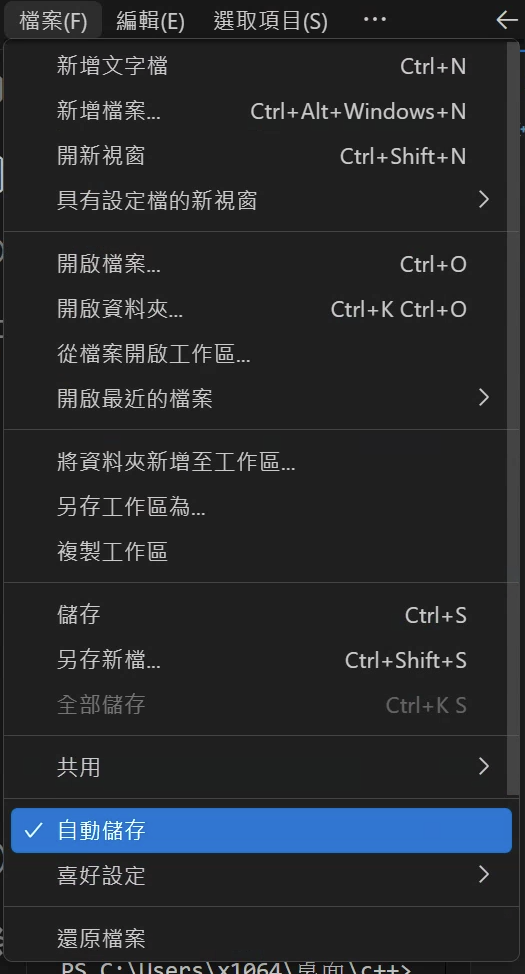

使用vscode撰寫c++¶
mingw設置¶
資料來源： 1.https://ithelp.ithome.com.tw/articles/10190235 2.https://blog.yangjerry.tw/2021/09/24/vscode-cpp-2021-part1/
下載網址，按綠色那個
https://sourceforge.net/projects/mingw/files/

安裝完後會跳出視窗選擇要安裝的套件，這裡選擇 base 和 g++，選好後點左上角的 Installation 選 Apply Change 開始安裝。
 安裝完後要將 MinGW 的安裝路徑 C:\MinGW\bin (自己的位置)加入系統環境變數。
我的電腦 -> 右鍵內容 -> 左邊選單 進階系統設定 -> 進階 環境變數。
安裝完後要將 MinGW 的安裝路徑 C:\MinGW\bin (自己的位置)加入系統環境變數。
我的電腦 -> 右鍵內容 -> 左邊選單 進階系統設定 -> 進階 環境變數。
 完成
完成
vscode設置¶
下載這些
1.偵錯/自動填字用
 按下後可設定
按下後可設定

選這些
 







以下為其他網站之資料：https://hackmd.io/@smallshawn95/vscode_write_cpp_2
Code Runner¶
能夠讓執行程式更方便的延伸模組，極度推薦安裝。 連結：https://marketplace.visualstudio.com/items?itemName=formulahendry.code-runner

設置 Vscode 環境：¶
查詢框輸入 > Open User Settings，打開 Vscode Setting Json 檔。

{
// 讓 Code Runner 將 C++ 執行在終端機中
"code-runner.runInTerminal": true,
// 預設 C++ 程式碼的編碼方式為 Big5(繁體中文標準庫)
"[cpp]":{
"files.encoding": "cp950"
},
//先儲存再執行
"code-runner.saveFileBeforeRun": true
}
執行程式：¶

題外話¶
執行時要儲存：ctrl+s，或是選擇自動儲存¶
- 
- 或是確保json設定檔有加上
//先儲存再執行 "code-runner.saveFileBeforeRun": true
變更執行程式快捷鍵¶
- 找到快捷鍵設定

- 輸入"ctrl+alt+n"，變更為F9
設定左側檔案排序方式¶
- 找到設定

- 選擇以type排序

使用chroombook
codeblocks-----sudo apt update
sudo apt install codeblocks
sudo apt update
sudo apt install g++
sudo apt-get install wget gpg
wget -qO- https://packages.microsoft.com/keys/microsoft.asc | gpg --dearmor > packages.microsoft.gpg
sudo install -D -o root -g root -m 644 packages.microsoft.gpg /etc/apt/keyrings/packages.microsoft.gpg
sudo sh -c 'echo "deb [arch=amd64,arm64,armhf signed-by=/etc/apt/keyrings/packages.microsoft.gpg] https://packages.microsoft.com/repos/code stable main" > /etc/apt/sources.list.d/vscode.list'
rm -f packages.microsoft.gpg
sudo apt install apt-transport-https
sudo apt update
sudo apt install code # or code-insiders
目錄